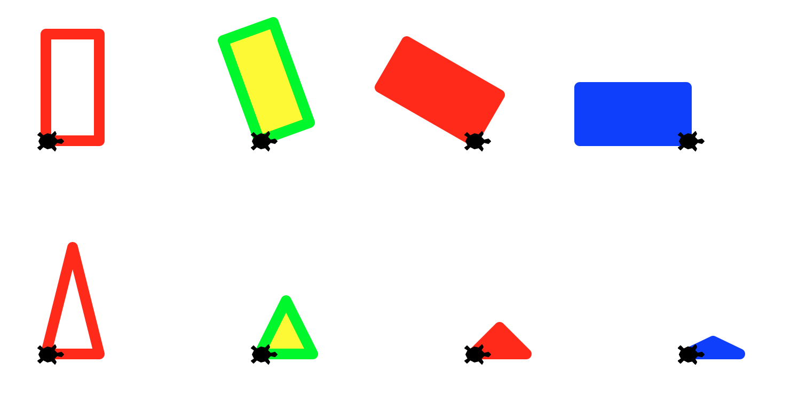
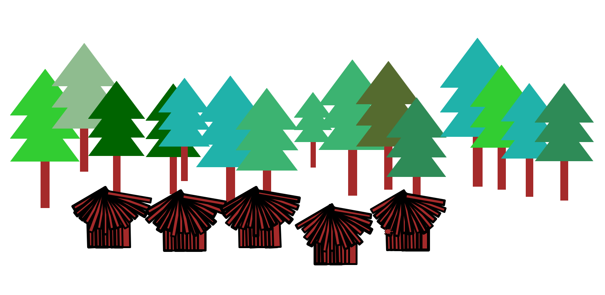
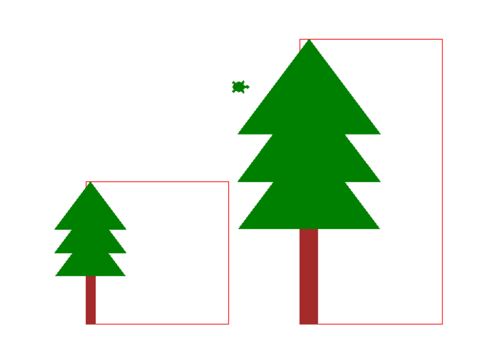
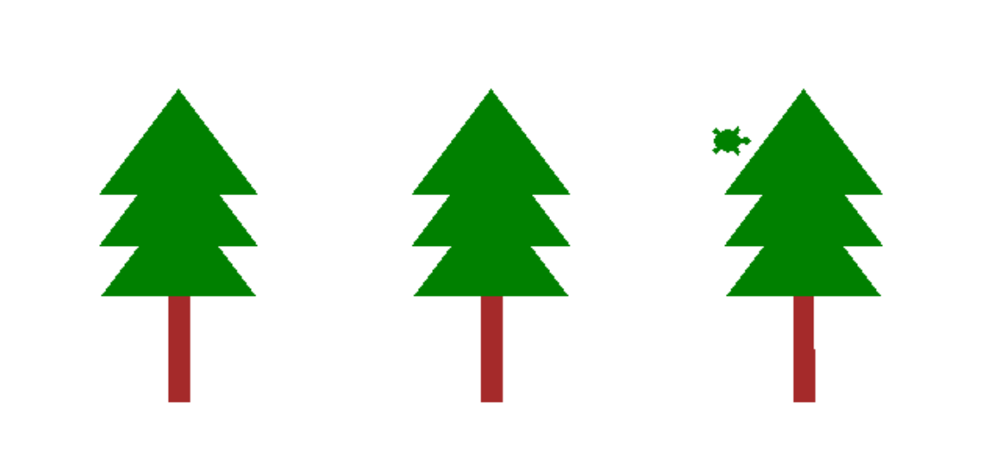
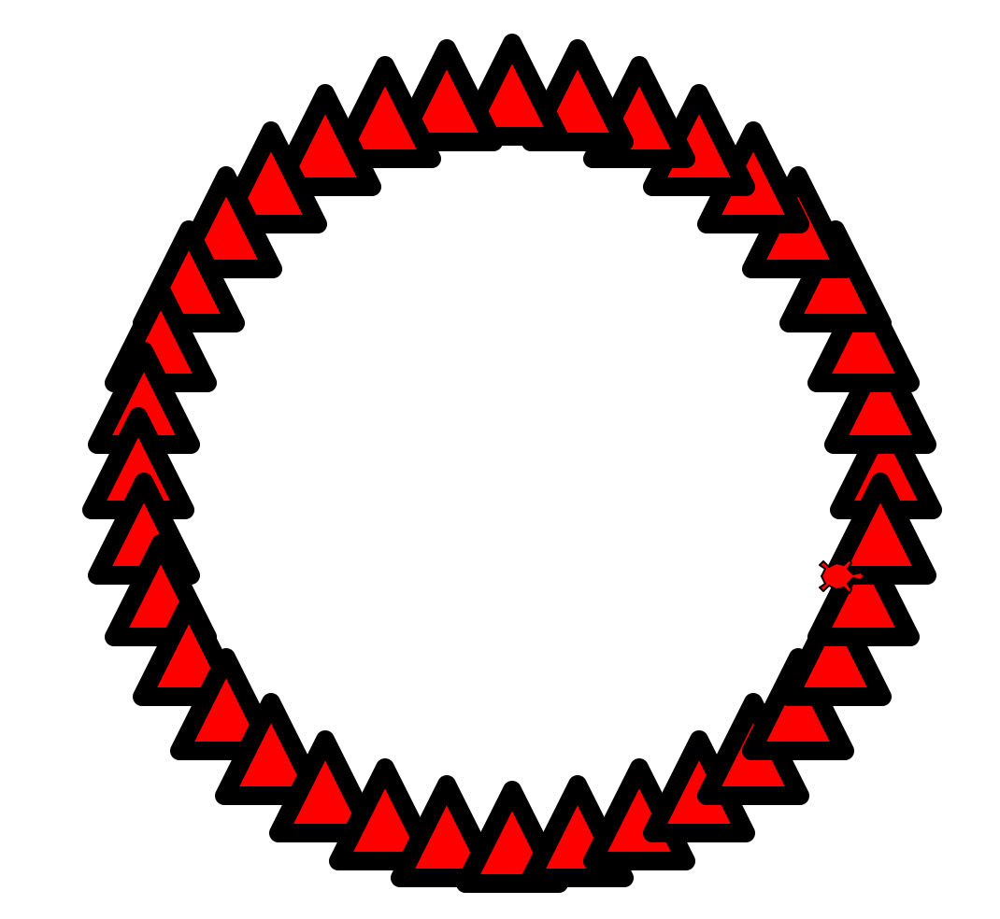
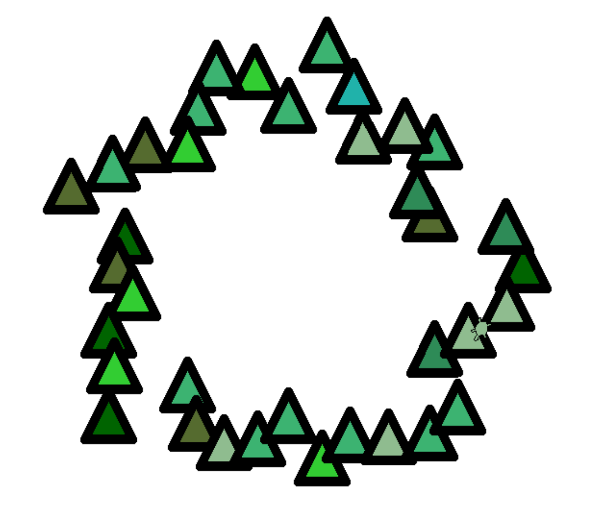

project01 : Project-01 Turtle Graphics: Scene from a forest
Meta Information
| Summary | The goal of this project is to draw a forest scene from two basic shape primitives: a rectangle and a triangle. |
| Topics | Functions, loops, randomization and turtle graphics |
| Audience | Appropriate for CS1 |
| Difficulty | This is an intermediate to advanced assignment, taking 1 or 2 weeks for a CS1 student. |
| Strengths | The strength of this assignment is that students see the concept of composition of code via functions visually with very basic elements. |
| Weaknesses | Students may find debugging time consuming if they don’t strategically isolate parts of their drawings |
| Dependencies | Requires students to know the basics of Turtle Graphics in Python |
Goal and Background
The goal of this project is to draw a forest scene from two basic shape primitives: a rectangle and a triangle. Students implement these primitives in a previous lab using turtle graphics. Each function takes parameters that specify the size, pen color, and fill color of that shape. The drawRectangle function additionally allows us to specifiy the tilt of the rectangle relative to the x-axis in degrees. The function definitions are given below:
drawRectangle(t, width, height, tilt, penColor, fillColor)drawTriangle(t, side, penColor, fillColor)
The parameter t is a turtle that is used in that function to draw something.
The output produced when each function is callled with specific parameter values is shown in the following figure.

The nifty idea in this assignment is that students create an interesting composition (aka a forest scene) using only two basic building blocks and the use of the random module to generate an artistic effect.
Instructions to students
The key learning goals are:
- using functions as building blocks in more complex compositions
- using loops to perform repetitive tasks
- using randomization to create variety and controlled chaos in drawings
- applying concepts learned in previous labs about creating and using modules
- pair programming is recommended for this project, but not mandatory*
What you’ll be drawing
In this lab you will use the basic shapes that you created in lab01 as building blocks to create the following forest scene!

To create this scene you will implement the following functions:
drawTree(): draws a tree comprised of only rectangles and triangles (as shown above) using the basic shape functions from lab01drawForest(): draws a row of trees with different shades of green placed randomly along a rowdrawHut(): draws a hut (as shown above) comprising only of rectangles reusing the basic rectangle function from lab01drawVillage(): draws a collection of huts placed randomly along a rowdrawScene(): draws the final scene as shown above using thedrawForest()anddrawVillage()functions- Extra credit: Add your own touch to this scene by writing new functions and calling them within
drawScene()
Files for submission
basicShapes.py- project01.py
The programming part
Step 1: Create a project01 directory under your cs8 directory
Create a directory called ~/cs8/project01 for a file
we are going to call project01.py.
If you don’t recall the commands, you may refer to any of the previous labs
Step 2: Open idle3 and create project01.py
Open up idle3 and select the menu option File => New File to create a new file. Save this file as project01.py
In this file, put this code (but put your name instead of “your name goes here”)
# project01.py, your name goes here
if __name__=="__main__":
print(‘Inside main of project01.py’)
The if test for __name__=="__main__": is where everthing in your program
should go except for:
importstatements- function definitions
Save this, and run it. You should see Inside main of project01.py printed to screen. Don’t set up the turtle in this file. We will reuse the turtle setup from lab01.
Step 3: Create a basicShapes module from your lab01.py
- Use the
mkdircommand to make a directory called ~/cs8/project01 - Assuming your lab01.py from lab01 is
in a directory called ~/cs8/lab01,
you can use this command to copy it into your new directory
and rename it as
basicShapes.pyall in one step:
cp ~/cs8/lab01/lab01.py ~/cs8/project01/basicShapes.py
-
If you were not able to finish lab01.py, you may use the solution available at this link: lab01-solution as your
basicShapes.pyfile. -
If necessary, modify the code in
basicShapes.pyso that you can import the code as a module. That is, everything exceptimportstatements, and function definitions should be inside the “main block”, the part that is indented inside the code:
if __name__=="__main__":
# code goes here
If you don’t know what this idiom does or why we are using it, consult this page:
If you still are unclear, ask one of the course helpers (TA, undergrad mentor, or instructor) for help.
Here are some hints:
- In
basicShapes.py, keep all the statements that relate to importing modules and setting up the turtle outside the `if name==”main:” at the top of the file:
import turtle
import math
- In
basicShapes.py, keep all the statements that relate to setting up the turtle inside the `if name==”main:” at the bottom of the file:
if __name__=="__main__":
chris = turtle.Turtle()
chris.shape("turtle")
chris.speed(0)
chris.width(4)
- Be sure that any functions that work with a turtle take the turtle as the first parameter, e.g.
t. Pass your actual turtle (e.g.chris) in as the value for that parameter. For example:
drawTriangle(chris, 100, 200, "blue", "green")
-
Put all other code that is not part of a function definition or import or turtle setup in the `if name==”main: clause”
-
Now you are ready to import
basicShapesas a module and use its functions:drawRectangle()anddrawTriangle() -
In Idle, open project01.py and import your basicShapes module by adding the following line to the top of the file:
import basicShapes
OR
from basicShapes import *
If you use the first import statement, everytime you want to call a function defined in basicShapes you must prefix it with basicShapes. e.g. basicShapes.drawRectangle(...)
If you use the second import statement, you can just call any function within basicShapes simply by its name e.g. drawRectangle(...)
Step 4: Draw a tree
In your project01.py define a ‘drawTree()’ function as shown below
def drawTree(t, height, color):
'''
This function uses turtle t to draw a tree of a given height that consists of a rectangular brown bark
and a top comprised of three triangles of a given color stacked on top of each other.
The bottom left corner of the bark (or the bottom left corner of the rectangle that the tree fits in),
should be the current location of the turtle.
Make no assumptions about the orientation of the turtle.
After drawing the tree the turtle should be returned to its original position and oriented at 0 degrees
All other parameters such as the width of the tree and the length of the bark
must be chosen so that the tree is well proportioned: a taller tree is wider and has a thicker and taller bark.
'''
-
In the spirit of Test Driven Development (TDD) style of developing your code, think about how you would test your
drawTree()function. -
Its natural to inspect the output visually, making sure your tree “looks right” with the expected shape and color. However it may be harder to tell if its drawn with the correct dimensions.
-
To check that write a function
checkTreeHeight()that helps you visually inspect if your tree is drawn with the specified height by drawing it beside a rectangle of the same height. Below is one possible implementation of thecheckTreeHeight()function:
def checkTreeHeight(t):
t.up()
t.goto(0,-200)
t.down()
drawRectangle(200, 200, 0 , "red","")
t.seth(0)
drawTree(t, 200, "green")
if __name__=="__main__":
chris = turtle.Turtle()
checkTreeHeight(chris)
If you ran the above code with a correct implementation of drawTree() you should see that the top of the tree coincide with the top side of the rectangle as shown in the following output:

Come up with an algorithm to draw a tree
Your next task to come up with a recipe (algorithm) to draw a tree. Think about the steps involved and write them out. Your algorithm should look something like this
Inputs: height of the tree (height), color of the tree top (color)
- Step 1: Draw the bark
- Step 1a: Go to the location of the bottom left corner of the bark
- Step 1b: Draw a rectangle of width (_), height (__) ….
- Step 2: Draw the tree top
- Step 2a: ….
- Step 2b: …
- Step 3: Return to the initial location of the turtle
Your algorithm should be similar but more complete. Write your algorithm as comments inside your drawTree() function.
-
Now identify the information that your algorithm needs that is not a direct input to your algorithm. For example: the location of the bottom left corner of the bark, the width of the rectangle that forms the bark, the height of the bark, and so on.
-
Refine your algorithm by adding steps for calculating missing information.
-
Your final task is to convert your algorithm to Python code. This means writing python instructions that perform what each step in your algorithm describes. For example, “go to the location of the bottom left corner of the bark” will translate to
t.goto(x,y), where(x, y)is the lcoation of the bottom left corner of the bark relative to the start position of the turtle. Retain your algorithm as comments in your code -
Test your implementation drawing at least two well-proportioned trees of different heights at two different locations. This code should be part of
checkTreeHeight()
Make an initial submission
Once you are done with the drawTree(), make an initial submission on Gradescope to the assignment for project01
Step 5: Draw a forest: row of trees
We would now like to go from drawing one or two trees to many trees, which will eventually become our forest. To begin define the function drawForest() as below:
def drawForest(t):
'''
Draws a collection of trees placed at random locations within a rectangular region
'''
Getting to a solution is an iterative process. Attempt a simpler version of the drawForest() function that would help you progress towards a final solution. Its up to you to define ‘a simpler version of the forest’. I might start by making a forest that comprises of just three trees of the same height placed in a row with equal spacing between them. For now, follow along because this simpler solution is a good segway to learning a very important programming concept: loops
One way of drawing three trees that are equally spaced from each other is to REPEAT the following two steps, three times in your code:
- jump to a new spot
- call the
drawTree()function
The corresponding code is shown below:
# Move the turtle to location (-200, -100) and draw a tree
t.up()
t.goto(-200, -100)
t.seth(0)
t.down()
drawTree(t, 200, "green")
# Move the turtle to location (0, -100) and draw another tree
t.up()
t.seth(0)
t.forward(200)
t.down()
drawTree(t, 200, "green")
# Move the turtle to location (200, -100) and draw the third tree
t.up()
t.seth(0)
t.forward(200)
t.down()
drawTree(t, 200, "green")
A (better) alternative is to use a for loop to do the repetion for you:
# Move the turtle to an initial location (code has been omitted)
for i in range(3):
t.up()
t.seth(0)
t.forward(200)
t.down()
drawTree(t, 200, "green")
Notice that when writing the for loop, we first identified what code needs to be repeated, and second placed that code in the body of the for loop. The for loop runs the block of code inside it three times. Try this technique to implement the first version of your drawForest() function. When you call the function you should get an output similar to the one below:

Drawing all the trees in a straight line is a good first attempt at creating the forest, its not very realistic. So, your next goal is to place the trees at random locations that are roughly along a horizontal line. Hint: use the python random module.
The next section is a warmup for working with the random module.
Step 6: Take a detour into random numbers
We are going to now do some warmups with random numbers. Open a new file named ‘randomPlay.py’ and experiment with the information in this section in that file. You don’t need to submit this file.
Start by writing a simple for loop to draw triangles along a circle. This code does not involve randomization.
from basicShapes import *
def regularPlay(t):
'''
A circle of triangles
'''
t.pensize(10)
for i in range(36):
t.up()
radius = 200
x = radius*math.cos(i*10*math.pi/180)
y = radius*math.sin(i*10*math.pi/180)
t.goto(x,y)
t.down()
drawTriangle(t, 50, 50, "black", "red")
...
if __name__=="__main__":
chris = turtle.Turtle()
...
regularPlay(chris)
When you run the above code, you should find a very regular arrangement of triangles along a circle as shown below. Read the code to understand why its producing this output. Note that the location of each triangle is dependent on the value of our loop variable i.

We will next use the random module to randomize two aspects of our drawing: the location of each triangle and its color. Previously, we drew all our triangles along a circle of radius 200. This time we will introduce a small random perturbation in that value by adding a random number between -50 and 50 to the radius in every iteration of the for loop. The line of code that does that is:
radius = 200 + random.randint(-50, 50)
The second modification we will make is to select the color of each triangle at random from a list of colors. The following two lines of code defines our color choices and then selects one color from this list at random.
# A list of color codes for different shades of green
shadesOfGreen =["#006400", "#556b2f", "#8fbc8f", "#2e8b57", "#3cb371", "#20b2aa", "#32cd32"]
color = random.choice(shadesOfGreen) # select one of the elements of the list at random
Now copy the following function into your ‘randomPlay.py’ file, read it and then run it
def randomPlay(t):
'''
Experiments with the random module
'''
shadesOfGreen =["#006400", "#556b2f", "#8fbc8f", "#2e8b57", "#3cb371", "#20b2aa", "#32cd32"]
t.pensize(10)
for i in range(36):
t.up()
radius = 200 + random.randint(-50, 50)
x = radius*math.cos(i*10*math.pi/180)
y = radius*math.sin(i*10*math.pi/180)
t.goto(x,y)
t.down()
color = random.choice(shadesOfGreen)
drawTriangle(t, 50, 50, "black", color)
The output of the code is shown in the figure below. Try changing the limits to the random.randint() function and re-run the code, and observe the outcome. Notice how you can control the level of randomness in your drawings using this simple strategy.

Apply what you have learned in this section to complete your drawForest() function. Your forest should contain anywhere between 10 trees of different sizes and different shades of green placed randomly roughly along a horizontal line.
Step 7: Draw a hut, then a village
Define a function to draw a hut with fixed dimensions, composed of only rectangles.
def drawHut(t):
'''
Draw a brown hut of fixed dimensions purely composed of rectangles
Use the random module to enhance your drawing by introducing irregularilities in a controlled way
'''
def drawVillage(t):
'''
Draw a sequence of five huts, placed randomly along a horizontal line
'''
When testing these functions, comment out all calls to previous functions. This will help you focus on the elements of interest in your drawing.
Step 8: Put it all together
Finally, put all the elements that you have implemented to draw the final scene. When you are finished, ask a TA or instructor to look it over and give you some feedback on it.
Your code in ‘project01.py` should be structured as follows:
- A single file called project01.py
- import statements
- Next, function defintions:
drawTree(),checkTreeHeight(),drawForest(),drawHut(), anddrawVillage()and any other functions that you like to add. - Finally, code that calls those functions to draw the forest scene. That code should be in a block that starts with
if __name__=="__main__":as explained later in the lab.
If your code meets all those criteria, you should be in good shape to submit it.
Step 9 (OPTIONAL) Make it your own!
With this project you have the opportunity to extend your learning by creating a non-trivial object to add to your scene. This can be anything you can come up with and draw using the turtle. Some examples include: a flower, a robot, etc. Feel free to use any functions inside the Python documentation on the turtle module
Step 10: Submitting via Gradescope
Note that this week, although we are using Gradescope, it is NOT the case that the grade you get from Gradescope is your final grade for the assignment.
The initial “automatically assigned” grade on Gradescope is just a PART of your grade–you will get 10 points for basically submitting anything that is a valid Python program that has the name project01.py.
However, the other 90 points for this lab will come from an instructor or TA doing a manual inspection of your code to see if it complies with the requirements listed above.
If you want reassurance that your code is in good shape, you may ask a TA or instructor to look it over during office hours or lab.
To submit your code, navigate to the page on Gradescope.com for submitting project01
If you got all green, and 10 points, then your submission was accepted—but to emphasize, for this week, the other 90 points will be assigned by a human grader.
Created by Diba Mirza, with updates from Phill Conrad